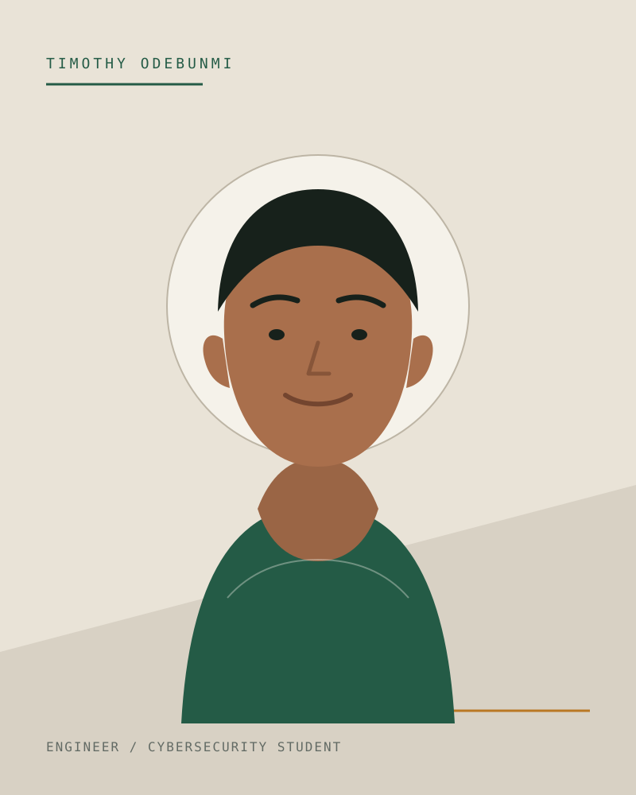

Engineering background
I have worked across backend APIs, data pipelines, automation, cloud infrastructure, and blockchain systems. I enjoy projects where reliability and clear operational thinking matter.
Software engineer / Cybersecurity student
I build dependable backend systems, data pipelines, and blockchain products that make complex operations easier to run.
My work spans production infrastructure, developer tools, payment systems, and automation. I am currently studying CyberSecurity at Miva University while continuing to grow as a systems-focused engineer.

Profile
A practical view of the experience, study, and working principles behind the projects in this portfolio.
I have worked across backend APIs, data pipelines, automation, cloud infrastructure, and blockchain systems. I enjoy projects where reliability and clear operational thinking matter.
My B.Sc program at Miva University is strengthening how I think about secure design, computing foundations, risk, and the responsibility that comes with building connected systems.
I prefer understandable code, measurable outcomes, and tools that are calm to operate. Whether I am building a service or a user interface, the goal is dependable delivery for real people.